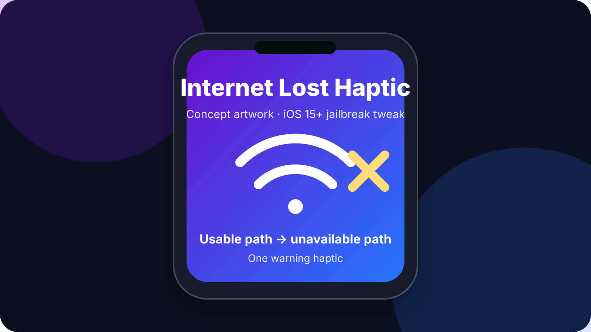
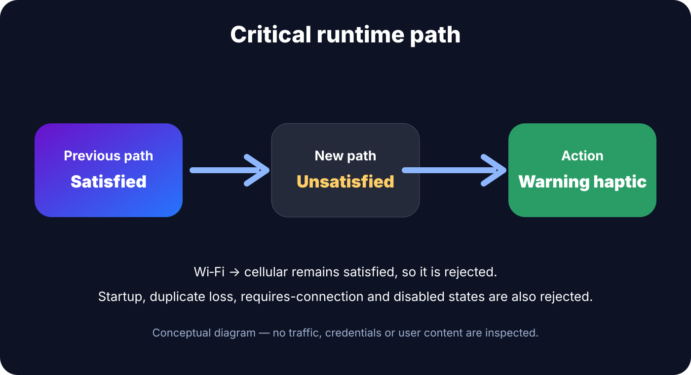

Internet Lost Haptic 1.0.0
Get one warning haptic when iOS changes from a usable network path to no usable network path. Ordinary Wi‑Fi-to-cellular handoff is intentionally ignored.
Jailbreak required. This release is build-validated and repository/live-HTTP validated, but its runtime and preference pane still require physical-device confirmation. Artwork is conceptual.

One focused feature
Hard connectivity-loss feedback
When Apple’s Network framework reports a transition from satisfied to unsatisfied, the tweak requests one warning haptic.
No Wi‑Fi handoff noise
If Wi‑Fi drops but cellular keeps the path usable, the path stays satisfied and no alert is generated.
One clean Settings switch
Settings contains only Enable Internet Lost Alert. No diagnostic or test rows are exposed in the release pane.
How it works

SpringBoard retains an NWPathMonitor on a serial queue. The first callback seeds state without alerting. Later callbacks alert only for an enabled, initialized satisfied → unsatisfied transition, then update the stored state. Haptic generation is dispatched to the main queue.
The tweak does not inspect packets, URLs, DNS queries, credentials, messages, photos, banking data, or other private content. It does not modify routing, Wi‑Fi, cellular, VPN, DRM, or security settings.
Download Internet Lost Haptic 1.0.0
Install only the package matching your jailbreak environment.
Installation
- Add https://nextsolution.cc/ to Sileo and refresh sources.
- Search for Internet Lost Haptic and confirm version 1.0.0.
- Install the RootHide or rootless package matching your environment.
- Allow the post-install respring.
- Open Settings → Internet Lost Haptic and leave Enable Internet Lost Alert on.
If SpringBoard enters Safe Mode, remove Internet Lost Haptic in Sileo and respring. Uninstalling does not change saved network configuration.
Recommended first test
- Confirm the Settings pane opens and shows only the enable switch.
- With Wi‑Fi and cellular available, switch away from Wi‑Fi; confirm there is no added haptic if cellular keeps connectivity usable.
- Restore a usable path, then create a genuine offline state such as Airplane Mode; confirm exactly one warning haptic when the path becomes unavailable.
- Stay offline and confirm the haptic does not repeat.
- Reconnect; confirm recovery itself does not haptic.
- Lose connectivity again and confirm one new warning haptic.
- Disable the tweak and repeat a genuine loss transition; confirm no added haptic.
Known limitations
NWPath describes whether SpringBoard has a usable system network path. It is not an end-to-end test of every website, DNS server or remote service. A captive portal or upstream service problem can exist while iOS still reports the path as satisfied, so this tweak intentionally does not claim to detect every possible Internet outage.
Physical behavior on the target iOS 16.0 RootHide device is not claimed verified until the test above is completed.
FAQ
Does this work on stock iOS?
No. Internet Lost Haptic is a jailbreak tweak.
Which build should RootHide users install?
InternetLostHaptic_1.0.0_RootHide.deb.
Which build should standard rootless users install?
InternetLostHaptic_1.0.0_Rootless.deb.
What iOS versions are targeted?
iOS 15 and later, with iOS 16.0 as the primary target.
Will Wi‑Fi to cellular trigger it?
Not when the system path remains usable. The alert rule requires a satisfied-to-unsatisfied path transition.
Does it inspect my network traffic?
No. It reacts only to Network-framework path status and does not read packet contents or credentials.
Does installation require a respring?
Yes. The package restarts SpringBoard and Preferences after installation.
How do I remove it?
Uninstall Internet Lost Haptic in Sileo and respring.